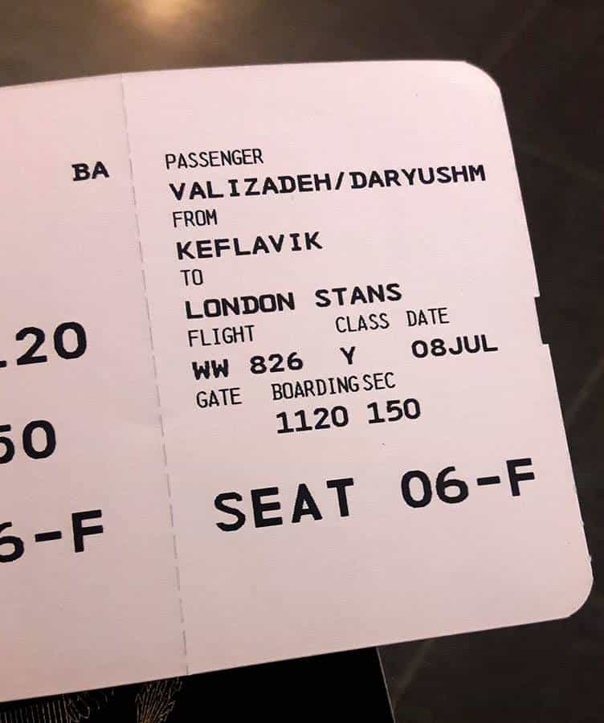
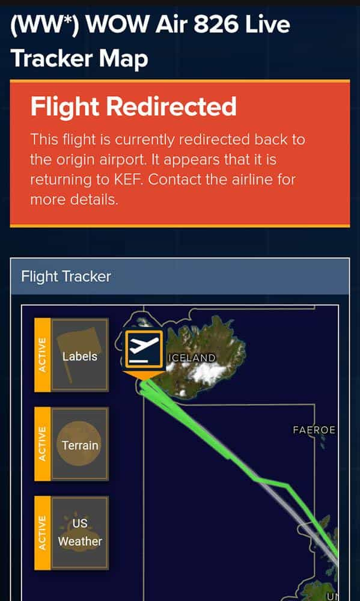
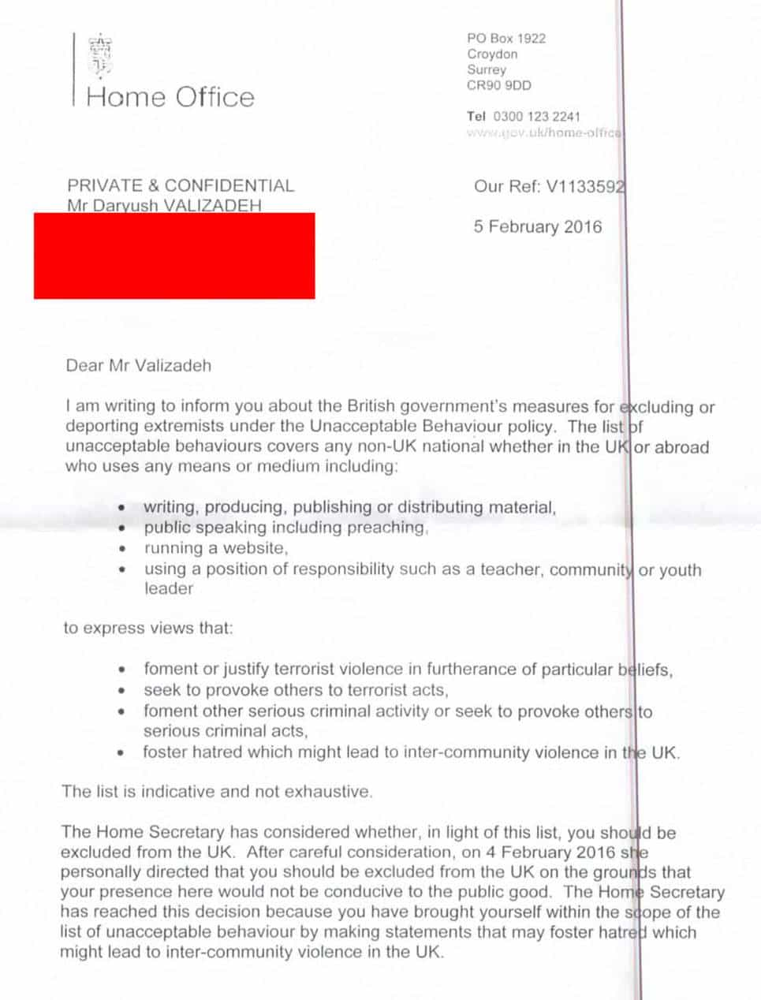
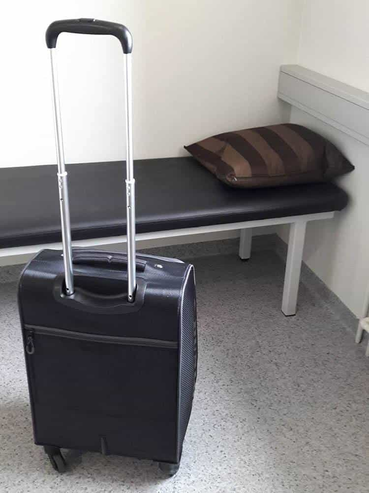
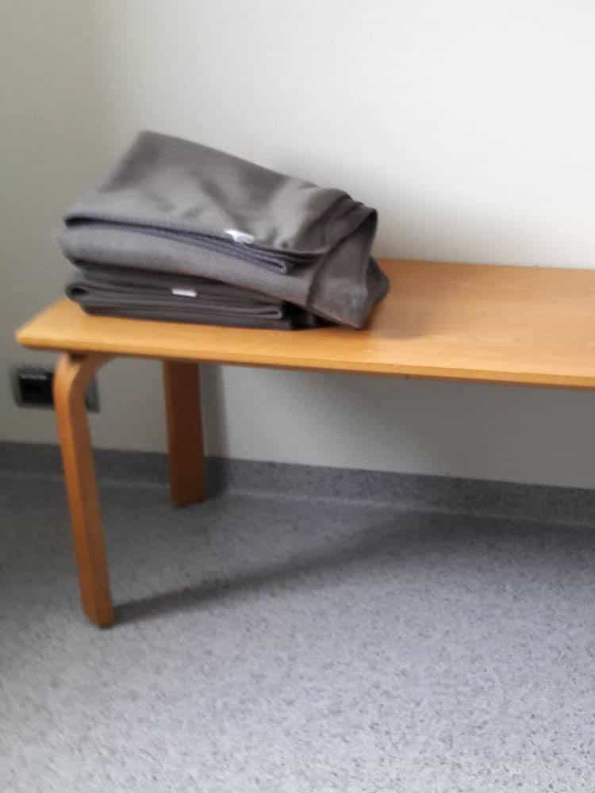
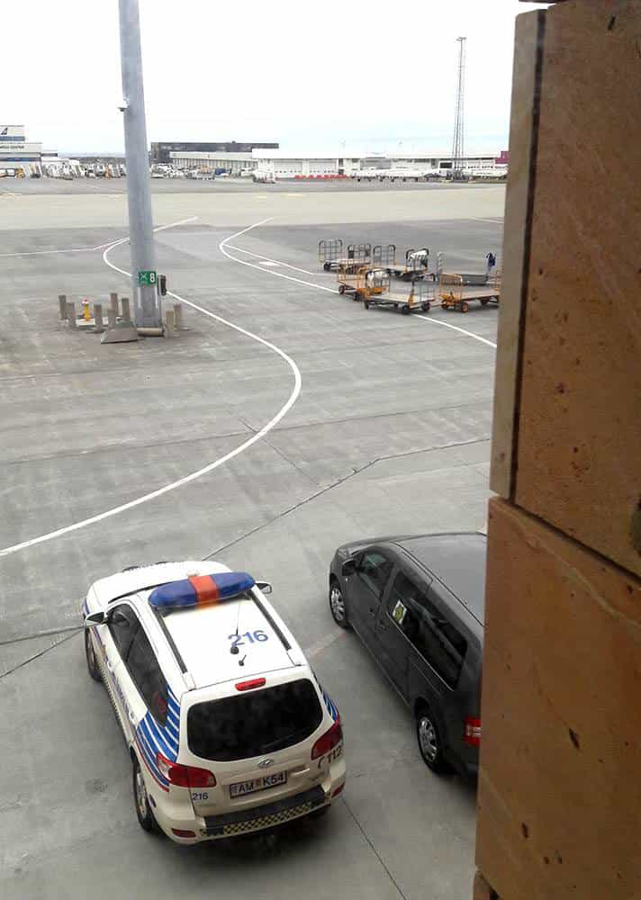

Daryush "Roosh" Valizadeh created ROK in October 2012. You can visit his blog at RooshV.com or follow him on Twitter and Facebook.


This article was originally published on Roosh V.
For my June trip to Washington D.C., I chose Icelandic discount air carrier Wow Air to save $400 compared to the airline I normally use. There was only one catch: on my return, I would have a connecting flight in London’s Stansfeld airport. I know I’m banned from England, but it should be safe to have a layover where I don’t have to go through customs, right? Four-hundred dollars was enough motivation to find out.
The journey began with Wow Air #116, a red eye flight from BWI airport to Keflavik, Iceland’s main airport. I landed in Iceland without incident and had a brief layover that did not require me to go through passport control. I then boarded Wow Air flight #826, an Airbus A321 that was full with over 200 passengers. I sat in my assigned window seat, 6F, next to a cute American girl. I was too tired to make small talk. The plane departed on schedule and I dozed off.

Not long into the flight, I woke up to the captain making an abrupt announcement: “Flight staff to the captain’s deck.” The lead flight attendant went into the cockpit and came out a few minutes later. The captain then made another announcement: “Because of a security issue, we have to return to Keflavik. We will land in ten minutes. I’m sorry for any inconvenience.” The airplane made a U-turn and dropped altitude.
I’ve been on a lot of flights in my life, but I never had one turn around due to a “security issue.” Was it because of me? There’s no way the authorities would inconvenience hundreds of people because one writer said some mean words on the internet, I thought. But as we approached the runway for landing, I began to mentally prepare for the worst.

After we landed, I asked the American girl for some gum in case I’d have to do some talking. She only had white Tic Tacs. I took them and added, “If they take me off the plane, it was nice sitting next to you.” She gave a weak smile.
The airplane taxied to an isolated area away from the terminal. I saw one police car parked outside. I closely observed the flight attendants to see if they would give a tell by looking in my direction, but they held a stiff poker face. They must be trained to not let the “terrorist” know that he has been found out.
The front door opened and two male Icelandic police officers entered. The lead officer started counting rows as he walked down the aisle. An excited man wearing a yamaka stood up and filmed the scene with a tablet. Would I be the lucky game show winner today? The officer stopped on row 6 and looked directly at me. “Daryush?” he asked. I nodded my head.
My two seat mates cleared the row so I could get out. I glanced behind me and saw a lot of nervous faces. “Should I get my stuff?” I asked. The officer said yes. I opened the overheard compartment and grabbed my laptop bag and hand luggage. The entire cabin was silent. I hadn’t trimmed my beard in months so they probably thought I was a real terrorist trying to Allahu Akbar the plane. I kept my head down. I felt so embarrassed. I didn’t mean to delay everyone’s travel plans to save a couple hundred bucks, but I underestimated how far the UK government would go to prevent me from stepping foot into the country, even for a layover.
The officers escorted me to the police car. I sat in the backseat with the junior officer. He kept a close eye on me for any signs of illegal aggression. All my fatigue disappeared.
“I know why this is happening,” I blurted out. “I’m banned from the UK, but I thought it would be okay to have a layover there since I wouldn’t have to go through UK passport control.”
“We’re not familiar with your case,” said the officer in the driver’s seat. “Why are you banned?”
“Because of words! Because of things I’ve written!” I lowered my voice. “Theresa May is keeping me out because she says I’m a misogynist while she lets in thousands of migrant criminals. It’s so dumb.”

Icelandic people are not normally chatty and these two officers were no exception. I looked at my hands. There were shaking. I squeezed them between my legs.
The car stopped and the officers escorted me into a holding cell. It had a cot with a pillow and a short table with two blankets. They took my passport and locked me in. I looked up at the ceiling and noticed a camera in the corner. I wondered if there was also a microphone. The wind was so strong that cold Icelandic air was whistling into the room. I briefly considered joking with the officers that I would complain to the United Nations for inhumane treatment.
The junior officer came back with a cup of water and told me to hang tight. I alternated between pacing the room and sitting down. I tried to inhale deeply to relax myself but I could only manage shallow breaths. I took some pictures of the room and imagined what I would tell my mom.


The supervisor came into the room. “So after your flight left we got a call from England…”
“A call from who? Someone in the government?” I eagerly wanted to know how their border system worked.
“We just got a call,” the officer replied, not wanting to give details. “And it said that you’re on the flight and you’re not allowed in England. At first we weren’t going to do anything, but then my station manager called and said that we need to bring you back.” So the UK government receives passenger data from all inbound flights that is cross-checked with their immigration and criminal databases. It’s great that they have a locktight system to keep their citizens safe from a thought criminal like myself, yet somehow thousands of Muslim immigrants manage to enter the country to sexually mutilate and abuse females, including children. It’s okay to harm British girls with physical violence as long as you don’t trigger them with internet articles.
“I bought this flight because it was cheap. I know I’m not allowed in England, but I thought a layover would be fine. I guess they didn’t know I had another flight out of the country. Well, I’d like to book another flight if that’s possible. I just don’t want to go back to the US. I’ll go to Africa, even.”
“Okay, this will take some time.” He left the room but didn’t close the door, indicating to me that things were de-escalating.
Serving hard time in Iceland. I almost got a prison tattoo.
Ten minutes later, the supervisor came back and showed me his smartphone. It had the cover of my book Bang Iceland. I grimaced. How do I explain to him that Iceland was one stop on a multi-year fuck tour?
“I was in Iceland a long time ago,” I started, noticing that there was a female officer standing outside the room. “When I was younger, I would travel to countries and then write books about how to… date women.”
“So you have a black belt in women?” The officer grinned while motioning to his belt.
“Something like that. It’s macho talk. I believe men should be masculine and women should sub… should follow men. That’s why I got banned in England. But you can’t say that anymore. I know in Iceland the women are more strong and independent. They don’t believe in old-fashioned arrangements.”
“Are you married, by the way?”
“Obviously not,” I joked. Him and the three officers outside the cell started laughing. He left the room and told me to continue waiting.
I stared out the window and saw an airport worker driving a baggage car. One of the bags fell out and he immediately stopped the car to retrieve it.

How many more bags will fall out of my baggage car? The book I wrote in 2011 will cause me trouble in this country. The article I wrote in 2015 will ban me from that country. The meetups in 2016 will get me attacked from this mayor or that politician for cheap political points. Bags will keep falling out because of things I’ve done in the past, even if one day I become Mother Teresa.
The supervisor came back. He said, “You’re free to go. There’s no reason for us to hold you.” I served one hour of hard time. Any longer and I would have started my first prison workout.
“Do I have to get a stamp to enter Iceland?” I asked.
“I already gave it to you.” He handed me my passport.
I gathered my things and he escorted me into the airport hall. “I hope I made your day a little more interesting,” I said.
“You did, but a few of my officers were reading the news articles and got upset over the things you said.”
“The media has made me a total monster, a rapist, a horrible person. It’s all fake news. I’m not a bad guy. They ruined my reputation and…” I considered explaining further, but even if you accept the most rosy interpretation of my writing, without all the distortions from the media, can you name someone who is more extreme than me when it comes to sex relations? Maybe I really am a monster. “They ruined my reputation and… I will always have to deal with that.”
I stuck out my hand and added, “Thank you for treating me well.” He shook my hand. I walked away and sat down on a bench. I would have to book another flight, and maybe a hotel room, but first I had to call my mom and tell her what happened. She won’t believe it.
Read Next: Theresa May Officially Bans Roosh From The UK While Terrorist Sympathizers Are Let In